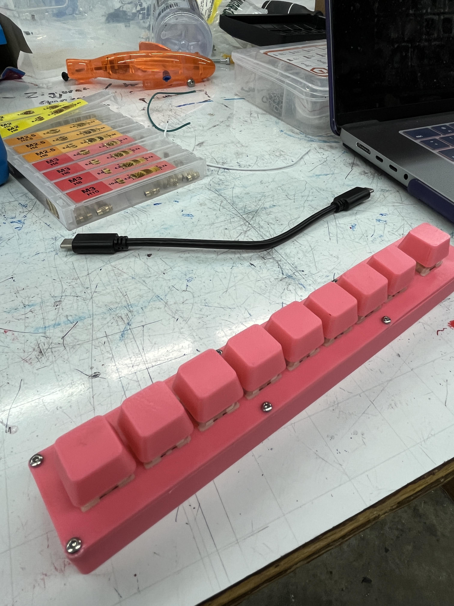

A First Foray Into DIY Keyboards
Why Make a Keyboard
I recently graduated from CMU's School of Computer Science, and while I was walking the stage accepting my diploma
it occured to me, "I don't know how a computer works." Don't get me wrong, CMU's CS curriculum is top notch,
but, largely because of my own choices in classes (which I wouldn't change), I have a degree in theoretical math boxes.
Don't get me wrong, I am perfectly comfortable with low level programming, but once we get below an OS, I have
very little idea how electronics work. So, I decided to take the summer to learn about more about this.
Simultaneously, I attended Keycon 2025, the premier Keyboard convention.
There, Joe Scotto gave a talk on the process of hand-wiring
keyboards and I was immediately hooked. I've had a vague interest in mechanical keyboards for a while and I saw
and opportunity to learn a bit more about electronics by building my own, completely from scratch. However,
I have never soldered before, never done embedded programming, and have very little 3D modeling experience. What
could possibly go wrong?
The Idea
It seems like a classic first project is a 3x3 macropad, but honestly, that seems a bit boring to me. I don't think
I would ever use it, and, if I'm going to do a project I have no use for, I'd like it to be at least entertaining.
Enter the Keybyte, a keyboard where you type one byte at a time. More specifically, my idea was to have a keyboard
with 9 keys in a row. The first 8 correspond to the bits of the byte you want to type, and the last is an "enter"
key which confirms the byte you are pressing. For example, to type an "A", which is 65 in ascii, you would need to
type the second and eight key (corresponding to the least significant and second most significant bits) and then
press "enter."
It's kind of like if the Stenotype Machine was comically
inefficient.
The 3d Model
Of course, any good keyboard needs a case. Unfortunately, they don't sell cases for keyboards this brilliant,
so I would have to design it myself.
I hadn't done any 3D modeling since highschool, but it was shockingly easy to get back into. I used onshape as
my modeling software and had a decent prototype modeled and printed in only a couple of hours. Honestly, the hardest
part was finding the dimensions of the MX switches I was going to use.
The Microchip
The first thing I had to learn about for this project was microchips.
I debated going with an arduino or raspberry pi, but I didn't like the fact that they used microUSB instead of USB C.
I know I could solder on a USB C breakout board, but that seemed like a lot of work. After doing some research, I
settled on the Sparkfun Pro Micro with an Atmega32U4 processor. In retrospect, I should've gone with a board with
and RP2040 so I could use the Raspberry Pi Pico SDK,
but I'll keep that in mind for the future. Having picked out a microchip, I had to face my biggest concern
for this project. Soldering.
Learning to Solder
A common theme I saw reading blog posts and watching videos about DIY is "how easy it is to solder." In my
experience, that could not have been further from the truth. I had about a million "bugs" due to poor connections,
especially between the pins of the switches and my copper wire. But, after spending several hours soldering and
re-soldering, I was able to get it to work! It should be noted that like any skill, you improve over time and I
definitely noticed my solder joints had improved by the end of the day.
Writing the Software
Finally something I'm good at! To be honest, I really wanted to write the software for this project in C,
but given the Atmega32U4, I decided to just use Arduino and be a bit sad about it. Truthfully, either way the code
is super simple, it's not like I was going to write the USB stack from scratch... for now. The only difference is
whether I would be using Arduino's Keyboard library or TinyUSB.
Writing the software was super simple, at least, given my experience programming for the past decade. The
entire thing is basically just:
if (pressed(PIN_ENTER)) {
char byte = 0;
for i in PINS.length {
if (pressed(PINS[i])) {
byte |= 1 << i;
}
}
Keyboard.write(byte);
}
Results
And that's it! With a WPM of approximately 0, here is the keybyte:
